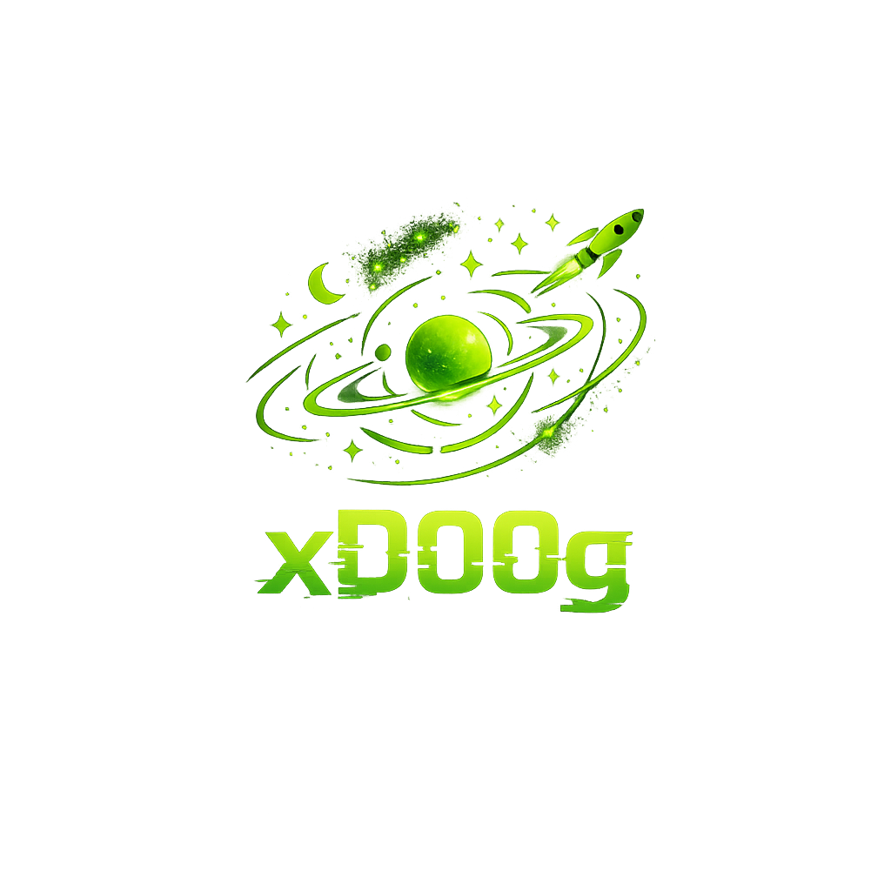

Doogster
Homelab · Space · Sound · The Open Road
A little corner of the internet running on green energy, self-hosted curiosity, and questionable amounts of RSS. Mostly experiments — occasionally useful ones.

Homelab · Space · Sound · The Open Road
A little corner of the internet running on green energy, self-hosted curiosity, and questionable amounts of RSS. Mostly experiments — occasionally useful ones.